Isomorphisms
6.1.3 Definition. Let [R, +, ⋅] and [R', +', ⋅'] be rings. An isomorphism φ between R and R' is a biunivoque correspondence between R and R' preserving the operations, i.e. such that
φ(a + b) = φ(a) +' φ(b) a, b ∈ R
and
φ(a⋅b) = φ(a) ⋅' φ(b) a, b ∈ R
If an isomorphism from R to R' exists, we say that R is isomorphic to R' and use the notation R ≅ R'. The relation of being isomorphic is an equivalence relation.
Any algebraic property that holds on R is also true on R' and viceversa owning to the bijective map, hence from an algebraic point of view they are identical. When we'll study a particular ring we'll refer to its isomorphism class containing all rings isomorphic to the first.
Examples of ring isomorphism
The isomorphism between the ring 𝕂[x] of polynomials with coefficients over 𝕂 and the ring of sequences having from a point on all 0 terms. We the operations we defined when discussing polynomials
The map from ℂ to ℂ of complex numbers to their complex conjugates.
Some properties satisfied by rings do not appear among ring axioms and are used to further characterize rings
A commutative ring satisfies the commutative property for multiplication.
A commutative ring with identity is a ring with a nonzero element, 1 ∈ R, that is an identity under multiplication i.e. if 1 ⋅ a = a ∀a ∈ R.
Let R be a ring with identity. The element a ∈ R is a unit or invertible elements, if it has a multiplicative inverse in R, that is if there exists b ∈ R such that ab = ba = 1, that is a divides 1. The element b is called the inverse of a, and is written a−1. It is unique; for if b and c are both inverses of a, then
c = 1c = (ba)c = b(ac) = b ⋅ 1 = b.
The units in ℤ are 1 and −1.
Remark Let u ∈ R be a unit with inverse v, so that uv = 1. For any b ∈ R we have u(vb) = (uv)b = 1b = b. Therefore
a unit divides every element of R
An integral domain is a commutative ring with identity and no zero-divisors i.e. ab = 0 ⇒ a = 0 or b = 0.
A field is a ring in which the nonzero elements form an abelian group under multiplication.
A division ring is a ring with identity (not necessarily commutative).
It is clear that only rings sharing the properties mentioned above can be considered isomorphic e.g. a ring with unit cannot be isomorphic to a ring without unit. For example for any integer n ∈ ℕ, let
nℤ = {nk : k ∈ ℤ}
be the set of integer multiplies of n. The set nℤ is a subset of ℤ and inherits addition and multiplication from ℤ. If we take two elements from nℤ, say nh and nk we can see that
nk + nh = n (k + h) and (nk)(nh) = n(knh)
by the distributive and associative laws. Addition and multiplication are both associative in nℤ and multiplication is distributive with respect to addition. In nℤ, 0 is the additive identity. However, there is no multiplicative identity in nℤ unless n = ± 1. There are also no multiplicative inverses for nk unless n = ± 1 and k = ± 1.
As a consequence ℤ is not isomorphic to 2ℤ. We can view nℤ as a "substructure" of ℤ.
6.1.4 Proposition. Let R be a ring with identity.
The identity is a unit; it is equal to its inverse.
If a is a unit, then so is a−1; its inverse is a.
If a and b are units, then so is ab; its inverse is b−1 a−1.
Proof.
1 ⋅ 1 = 1
This is shown by the equation aa−1 = a−1 a = 1
We have (ab)(b−1a−1) = a (bb−1) a−1 = aa−1 = 1.
and, similarly, (b−1 a−1)(ab) = 1.□
6.1.5 Definition. Two elements a, b of the integral domain R are said to be associates if there is a unit u ∈ R such that b = au. This is not a different proposition from the one we already gave when studying the integers: Two elements a and b of ℤ such that a|b and b|a are said associates
If a and b are associates, a = cb and b = da, hence a = cda. The cancellation law gives 1 = cd, so both c and d are units.
Note that, by the above Proposition, it follows that being associates is an equivalence relation: it is
reflexive, since a = a1;
symmetric, since b = au implies a = bu−1;
transitive, since b = au and c = bv imply c = a(uv).
R is partitioned into equivalence classes, called associate classes. For example, in ℤ, the associate classes are the sets {n, −n} for all non-negative integers n.